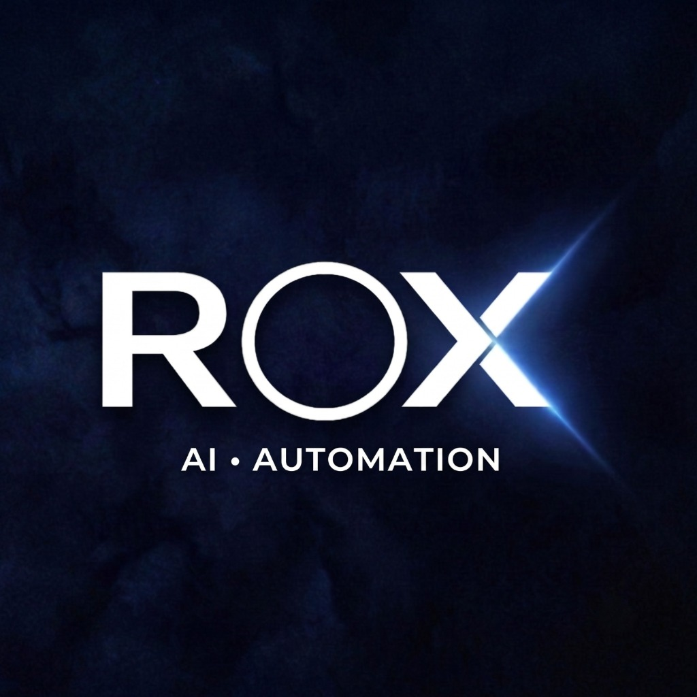

Fora do horário comercial
Anúncio roda 24 horas. Equipe atende 8. A mensagem que chega às 21h espera até amanhã — e o concorrente que respondeu em dois minutos já marcou.

Agendar diagnósticoOperação comercial para empresas que vivem de lead
Lead entra pelo WhatsApp a qualquer hora. A RoxOps constrói a esteira que recebe, tria, qualifica, agenda e lembra — e devolve pra você o relatório do que cada lead virou.
O gargalo
Anúncio roda 24 horas. Equipe atende 8. A mensagem que chega às 21h espera até amanhã — e o concorrente que respondeu em dois minutos já marcou.
Sem CRM, o histórico está no celular de uma pessoa. Quando ela sai de férias, o pipeline sai junto. Não dá pra medir o que não está registrado.
Consulta marcada não é consulta realizada. Sem confirmação ativa, o horário vazio já foi pago em mídia, em equipe e em estrutura.
A estrutura
Não é um chatbot. É a esteira inteira, montada no n8n, ligada ao seu WhatsApp, ao seu CRM e à sua agenda. Cada fluxo entrega o lead pro próximo com o contexto que já foi coletado.
Recebe a mensagem, entende se é lead novo, paciente antigo ou fornecedor, e manda pro caminho certo. Áudio, imagem e documento entram junto — nada fica sem leitura.
Um agente qualifica, um responde as dúvidas que se repetem todo dia e um agenda direto na sua agenda. Conversa, não formulário — e no tom que sua empresa usa.
Quando o caso pede humano, a IA sai de cena e entrega a conversa resumida pra sua equipe. Ninguém precisa rolar 80 mensagens pra entender o que o cliente quer.
Lembretes automáticos antes do compromisso, com confirmação de presença. Quem desmarca abre o horário a tempo de você preencher.
E por cima de tudo: relatório.
Quantos leads entraram, quantos foram respondidos, em quanto tempo, quantos viraram agendamento e quantos apareceram. Chega no seu WhatsApp — você não precisa abrir dashboard nenhum pra saber se está funcionando.
Como entramos
Mapeamos como o lead entra hoje, onde ele para e quanto isso custa por mês. Você recebe o desenho da operação atual e a projeção do que muda — mesmo que decida não seguir com a gente.
Construímos os fluxos, integramos WhatsApp, CRM e agenda, treinamos os agentes com o seu jeito de atender e rodamos testes reais antes de ligar. Um cliente por vez, pra sair certo.
A esteira roda e a gente cuida dela: monitoramento, ajuste de fluxo, atualização quando alguma API muda e relatório recorrente. Você opera, não administra automação.
Em produção
Uma clínica de geriatria em Belo Horizonte roda a esteira completa da RoxOps desde março de 2026: atendimento, agendamento, confirmação e pesquisa de satisfação, todos ligados ao WhatsApp da secretaria.
Para quem
Próximo passo
Uma conversa de 30 minutos pra entender sua operação e mostrar onde o lead está parando. Se não fizer sentido automatizar agora, a gente fala isso na hora.